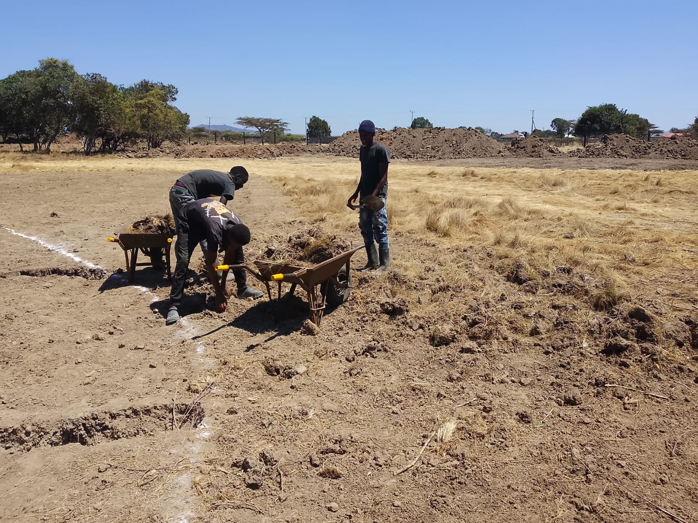
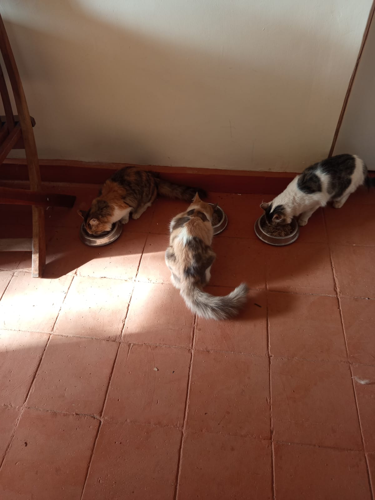
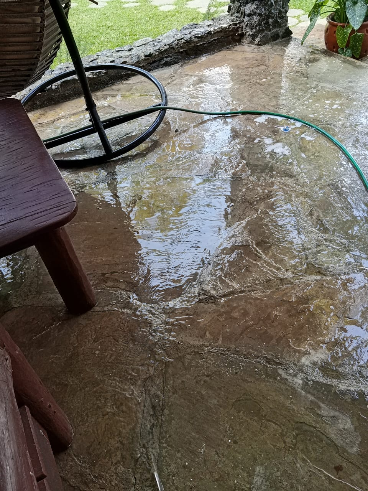
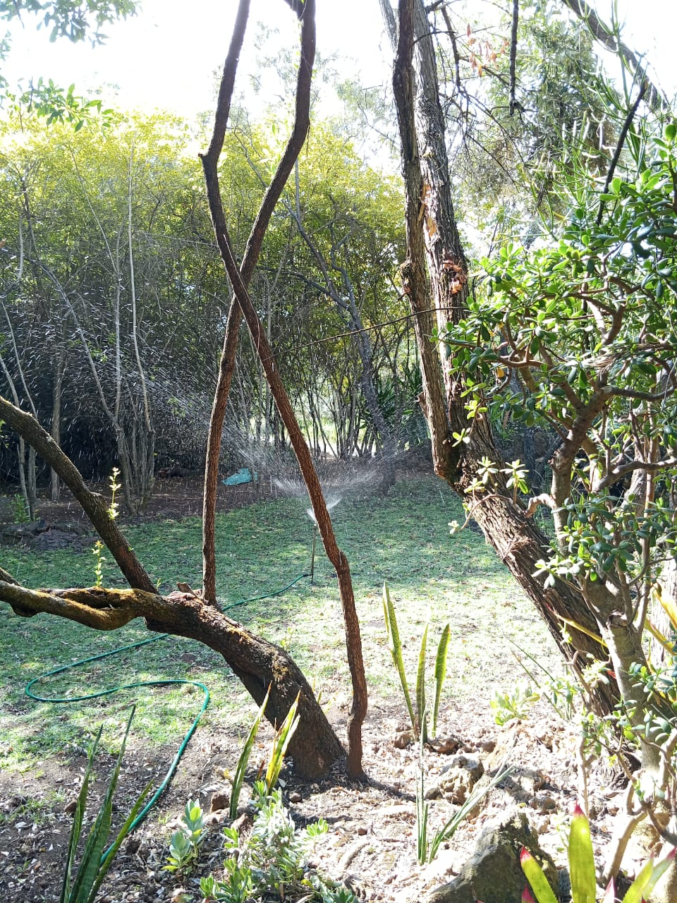

Mucheru World of Golf
- Multi-Teebox Levelling & Subgrade Grading: Deployed the heavy Backhoe Loader for intensive earthmoving, shaping, and precision surface levelling across Teeboxes No. 11, 10, 1, 2, 3, and 4, establishing uniform playing grades and true foundation levels.
- Green No. 10 Clearance & Earthwork Prep: Executed comprehensive surface clearance across Green No. 10, consolidating stripped topsoil mounds and preparing the base perimeter for subsequent grading.
- Green No. 16 Drainage Trenching: Labor teams excavated sub-surface drainage trenches across Green No. 16 along marked layout lines to establish proper gravity runoff and stormwater discharge channels.
- Structural Welding & Infrastructure Repairs: Completed essential structural welding repairs covering site security grill doors and facility gates.
- Facility Electrical Maintenance: Executed critical electrical repairs and lighting maintenance servicing the staff residential quarters, cowshed operational zone, and decorative bridge lighting.
Key Milestone Accomplished: 6 Championship Teeboxes Precision-Levelled
Significant earthmoving milestone completed today with six full teeboxes (Nos. 11, 10, 1, 2, 3, and 4) shaped and graded, alongside successful drainage excavation on Green 16 and site electrical repairs.
| Equipment Description | Registration / ID | Active Task Profile | Operating Hours | Rate (KES/Hr) | Total Cost (KES) |
|---|---|---|---|---|---|
| Backhoe Loader (Front Loader / Backhoe Unit) | KHMA 118W (XGMA XG765N) | Levelling Teeboxes No. 11, 10, 1, 2, 3 & 4; Earthmoving & Grading | 8 hrs 30 mins (8.50 hrs) | 6,500 | KES 55,250 |
| Total Equipment Expenditure | 8h 30m Logged | - | KES 55,250 | ||

Backhoe Loader Teebox Levelling
Heavy Backhoe Loader actively cutting, spreading, and grading red soil across the designated tee box platforms to establish championship levels.

Earthmoving Equipment on Teebox Grade
Detailed view of the XGMA Backhoe Loader stationed on the earthworks mound during continuous teebox leveling and subgrade compaction.

Aerial View of Levelled Teebox Complex
Drone perspective showcasing the completed precision levelling across the tee box subgrade along the perimeter boundary fence line with equipment track markings.

Graded Approach Corridor & Teebox (Aerial)
Expansive overhead view of the newly graded teebox approach corridor with a material tipper truck stationed on the adjacent access route during site inspection.

Elevated Teebox Platform & Rock Retaining Edging
Aerial survey highlighting an elevated teebox platform reinforced with hardcore rock revetment foundation and precision-levelled red soil playing surface.

Precision-Levelled Teebox Subgrade
High-angle drone capture of the rectangular teebox foundation, demonstrating true subgrade grade levels and perimeter stone reinforcement alongside the cart pathway.

Elevated Championship Teebox Formation
Aerial perspective of an elevated tee box pad nestled among indigenous trees, featuring structured hardcore perimeter revetments and uniform surface grading.

Completed Teebox Grade & Material Staging
Drone capture of the finished teebox level positioned adjacent to clean aggregate/ballast and red soil staging zones near the boundary fence line.

Green No. 10 Base Clearance
Expansive view across Green No. 10 showing cleared terrain and organized soil stockpiles prepared for subgrade shaping and fine finishing.

Green No. 16 Drainage Trenching
Labor team utilizing picks and shovels to excavate geometric drainage lines along marked white surface demarcations on Green No. 16.

Drainage Excavation & Spoil Haulage
Workforce excavating trench channels and utilizing wheelbarrows to clear excavated soil spoil along designated fairway drainage paths.
🎥 Levelled Championship Teeboxes — Aerial Drone Survey
Drone footage showcasing the precision-levelled teeboxes (Nos. 11, 10, 1, 2, 3 & 4) following intensive Backhoe Loader earthmoving and subgrade grading operations across the Mucheru World of Golf course.
Chaka Farms
- DeKUT Academic Delegation & Site Tour: Mr. Joe Mucheru hosted Professor Ciira from Dedan Kimathi University of Technology (DeKUT) for an extensive on-site walking inspection across the golf course development and Chaka Farms agricultural acreage to explore institutional synergies and land management.

DeKUT Executive Farm & Golf Tour
Mr. Joe Mucheru and Prof. Ciira (DeKUT) conducting a comprehensive on-site walking tour along the farm boundary and golf course grounds.
- Daily Dairy Milking Yield (6.5 Litres Gross): Kamandau oversaw morning (4.0 Litres) and evening (2.5 Litres) milking sessions, yielding a total gross production of 6.5 Litres of fresh cow milk.
- Goat Kids Nutritional Milk Ration: Distributed a total daily ration of 1.0 Litre (0.5 Litres morning session and 0.5 Litres evening session) deducted directly from the gross milk yield to nourish young goat kids.
- Staff Milk Allocations: Issued daily milk rations of 0.5 Litres to Gladys and 0.5 Litres to Maasai deducted from the gross production (Total deductions: 2.0 Litres; Net farm balance: 4.5 Litres).
| Production & Allocation Breakdown | Morning Session | Evening Session | Total Daily Volume |
|---|---|---|---|
| 🥛 Gross Milk Production (Yield from Dairy Cows) | |||
| Dairy Cow Milk Yield | 4.0 Litres | 2.5 Litres | 6.5 Litres |
| 📤 Milk Allocations & Rations (Deducted from Yield) | |||
| Goat Kids Nutritional Ration | 0.5 Litres | 0.5 Litres | - 1.0 Litre |
| Gladys Allocation | 0.5 Litres | - | - 0.5 Litres |
| Maasai Allocation | 0.5 Litres | - | - 0.5 Litres |
| Total Milk Allocated / Distributed | 2.0 Litres | ||
| Net Remaining Farm Milk Balance | 4.5 Litres | ||
- Canine Off-Leash Field Exercise: Willy conducted structured off-leash walking and open-field exercise sessions across the farm perimeter.
- Socialization Drills: Supervised positive canine socialization sessions with the farm goat herd and young goat kids to maintain stable pack behavior.
- Obedience & Manners Conditioning: Conducted focused kennel manners reinforcement, focusing on positive response to the "paw" command and "spine" alignment commands.
- Kennel & Farm Facility Welding Repairs: Performed targeted structural welding repairs and hinge reinforcement on Bella and Logan's kennel stall doors and the cow pen enclosure door.
- Farm Office Window Hinge Welding Repair: Re-welded and reinforced the steel window frame hinge on the Chaka Farms office building to ensure smooth opening and structural security.
- Material Haulage (Kinoti): Supervised the haulage of 1 trip of sand dispatched from the farm greenhouse depot to the golf course construction zone.
- Compound Upkeep (Margaret & Monica): Executed comprehensive daily compound sweeping, grounds grooming, and general facility cleanliness across the farmstead.

Kennel Door Hinge Welding & Repair
Logan standing calmly inside his kennel enclosure following precise re-welding and structural reinforcement of the upper door hinge.

Reinforced Lower Kennel Hinge
Close-up inspection of the sturdy welded hinge joint on the kennel door frame, restoring full alignment and locking security.

Farm Office Window Hinge Repair
Close-up view of the newly re-welded and reinforced steel hinge on the Chaka Farms office window frame, ensuring smooth and secure operation.
 to golf.jpeg)
Material Haulage: 1 Trip Sand Dispatched
Clean construction sand delivered from the farm greenhouse storage area and deposited along the golf course trenching corridor under Kinoti's supervision.
Kabete Residence
- Main Entrance Gate Painting (100% Completed): Skilled artisan painter completed comprehensive gloss black paint application and protective weatherproofing across the primary wrought-iron main entrance gates and steel boundary frame.
- Dog Kennel Wall Painting: Applied bright red protective wood coating on the internal timber boarding and side walls of the new main gate dog kennel enclosure.
- Elevated Water Storage Tank Stand (Second Coat): Applied the second high-durability black protective coat across the heavy structural steel tank stand tower, framework, and vertical access ladder.
- Residential Drainage Channel Construction (In Progress): Advanced masonry and concrete channel lining along the residential stormwater drainage route to ensure efficient water diversion.
- Outdoor Fireplace Demolition & Clearance (In Progress): Manual labor crew actively excavated red soil subgrade, extracted stone boulders, and cleared rubble from the circular sunken outdoor fireplace lounge area.
- Domestic Pet Nutrition & Care: Attentive daily feeding and wellness care provided for Ajabu the Golden Retriever and resident cats (Aiko & Reo).
Key Milestone Accomplished: Main Gate Wrought-Iron Paint Works 100% Complete
The ornate wrought-iron main entrance gates have been completely prepped, treated, and coated in rich gloss black protective paint, delivering an exceptional aesthetic entrance finish.

Main Gate Paint Works (100% Complete)
Artisan painter putting final touches on the fully coated gloss black wrought-iron entrance gates, completing the full gate refurbishment.

Dog Kennel Wall Protective Painting
Application of vivid red protective enamel coat to the interior timber panels of the gate dog kennel structure behind the welded mesh grille.

Main Water Storage Tank Stand (2nd Coat)
Painter applying the second protective gloss black coat onto the heavy structural steel support legs of the elevated water storage tank.

Storage Tank Access Ladder Finish
Detailed view of the steel access ladder welded to the water tank support tower, finished with a fresh second coat of black protective paint.

Stormwater Drainage Channel Lining
Concrete and stone masonry lining underway along the newly formed residential drainage trench to manage site stormwater runoff.

Outdoor Fireplace Excavation Pit
Laborers in high-visibility safety vests clearing red soil, extracting tree roots, and removing heavy stone rubble from the sunken circular pit.

Sunken Fireplace Clearance Overview
Panoramic perspective showing the circular curved stone retaining wall and extensive boulder clearance underway in the sunken outdoor lounge.

Ajabu the Golden Retriever
Ajabu enjoying his daily balanced meal on the clean tiled patio at Kabete Residence under Njoki's attentive care.

Resident Cats Feeding Routine
Resident cats feeding comfortably from individual stainless steel bowls inside their designated feeding area.
Amani Cottage
- Lawn & Garden Sprinkler Irrigation: Deployed high-coverage rotary sprinklers across the front lawn, ornamental shrubs, and tree canopy perimeters to sustain turf health.
- Garden Litter Clearance: Conducted thorough grounds cleaning, sweeping and collecting fallen foliage, dry twigs, and litter throughout the cottage lawns.
- Main Door Balcony / Veranda Deep Cleaning: Performed thorough scrubbing, soap washing, and pressure water rinsing across the flagstone balcony and veranda at the main entrance.
- Comprehensive Cottage Housekeeping (Upstairs to Downstairs): Housekeeper executed complete multi-level cleaning from upstairs to downstairs, including dusting, floor sanitization, and furniture upkeep across all living spaces.

Main Entrance Veranda Washing
Soap washing and thorough water scrubbing underway across the stone paved veranda and balcony outside the cottage main entrance.

Veranda Flagstone Surface Rinsing
Freshly rinsed and sparkling stone patio floor at the cottage entrance following deep cleaning and debris removal.
.jpeg)
Veranda Furniture & Interior Upkeep
Cleaned outdoor rustic lounge furniture and pristine stone floor outside the entrance following comprehensive housekeeping from upstairs to downstairs.

Front Lawn Sprinkler Irrigation
High-arc sprinkler actively watering the lush green lawn and tree boundary along the front grounds of Amani Cottage.

Garden & Tree Canopy Hydration
Targeted sprinkler irrigation running across the garden bed and mature tree borders to maintain vibrant moisture levels.